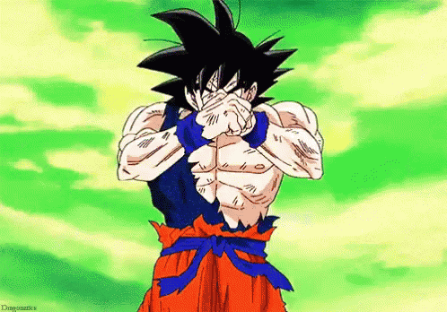

Super Saiyan Yourself
Instructions
Super Saiyan Yourself is a web application made by Gabbosaur that allows you to transform into a Super Saiyan by just moving your arms.
How to play
Click on START WEBCAM button and give access to the camera.
There are 3 poses to play with:
Neutral: standing still with relaxed arms
Initial: making an X with your forearms, this is the initial pose in order to gather
energy to
transform
Aura burst: spread your arms like Goku when he's turning Super Saiyan

Border color indicators
Red
Move a bit further from the camera in order detect the important
keypoints (eyes, nose,
shoulders, elbows, wrists and hips)
Green
Ready for poses
Yellow
Default color and triggered when in Aura burst state